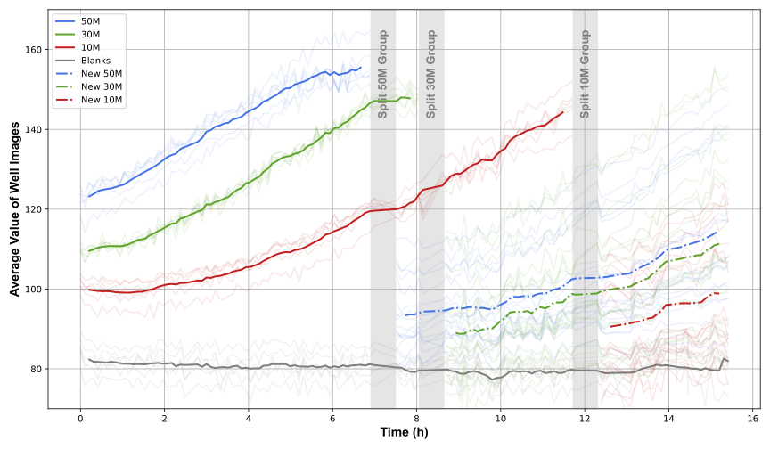

RoboCulture cleverly attaches new pipette tips using a spiral motion and force feedback.
Automating biological experimentation remains challenging due to the need for millimeter-scale precision, long and multi-step experiments, and the dynamic nature of living systems. Current liquid handlers only partially automate workflows, as human intervention is still required for plate loading and tip replacement. Industrial solutions offer more automation but are costly and lack the flexibility needed in research settings. Meanwhile, research in autonomous robotics has yet to bridge the gap for long-duration, failure-sensitive biological experiments.
We introduce RoboCulture, a cost-effective and flexible platform that uses a general-purpose robotic manipulator to automate key biological tasks. RoboCulture performs liquid handling, interacts with lab equipment, and leverages computer vision for real-time decisions using optical density-based growth monitoring. We demonstrate a fully autonomous 15-hour yeast culture experiment where RoboCulture uses vision and force feedback and a modular behavior tree framework to robustly execute, monitor, and manage experiments.
Image-based visual servoing centers the pipette tip over any well of an arbitrarily positioned 96-well plate in real time, achieving a 99.0% insertion success rate over 576 attempts across six random plate placements.
A force-monitored spiral search reliably aligns and attaches fresh pipette tips. A custom 3D-printed remover hooks and ejects contaminated tips to maintain sterility without human intervention.
A downward-facing camera tracks per-well optical density at regular intervals, constructing growth curves that autonomously trigger sub-culturing when saturation is detected.
RoboCulture performing cell expansion (30x speed). After completing the optical density monitoring procedure, the robot initiates the well-splitting process. It first retrieves the pipette from its stand and attaches a fresh pipette tip. Growth media is then aspirated and dispensed into 18 empty wells. The robot proceeds by resuspending the first saturated well and distributing its contents into three of the pre-filled wells, followed by the disposal of the used pipette tip. For each of the remaining five saturated wells, a new pipette tip is attached, used, and discarded in sequence.
RoboCulture cleverly attaches new pipette tips using a spiral motion and force feedback.
The contaminated pipette tip is removed using a 3D-printed pipette tip remover.
Using a camera mounted on the robot, RoboCulture perceives the positions of the wells and the pipette tip. This video shows the perception output while moving the robot arm manually.
Even under disturbances, RoboCulture can accurately detect the position of the wells and reposition the pipette tip accordingly.
RoboCulture uses its camera to monitor the growth of the yeast culture and make experiment decisions based on the optical density of the wells. The robot pans across the well plate to capture images of the wells at regular intervals.
By imaging the wells at multiple intervals, RoboCulture constructs a growth curve for each well, informing its decision to split the wells.
RoboCulture autonomously cultured S. cerevisiae across three initial seeding concentrations (10M, 30M, and 50M cells/mL) over 15 hours. Growth was monitored by tracking per-well image brightness as a proxy for optical density. When wells reached saturation, the robot independently initiated sub-culturing, diluting each group 3× into fresh media-filled wells. The resulting growth curves closely match those obtained from a simultaneously prepared reference plate measured by a standard plate reader under skilled human operation.

@article{angers2025roboculture,
title={RoboCulture: A Robotics Platform for Automated Biological Experimentation},
author={Kevin Angers and Kourosh Darvish and Naruki Yoshikawa and Sargol Okhovatian and Dawn Bannerman and Ilya Yakavets and Florian Shkurti and Alán Aspuru-Guzik and Milica Radisic},
year={2025},
eprint={2505.14941},
archivePrefix={arXiv},
primaryClass={cs.RO},
url={https://arxiv.org/abs/2505.14941},
}